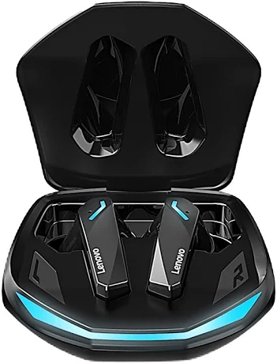

EchoWave
Conheça o EchoWave Pro
Esse e o Fone de Ouvido Bluetooth com tecnologia ANC

Promoção de R$ 599,90 por apenas R$ 449,90
Especificações técnicas
- Bluetooth 5.3
- Autonomia de 30 horas
- Cancelamento de ruído ativo
- Resistência à água
Modo pareamento: pressione e segure por 3 segundos até o LED piscar em azul.O que dizem nossos clientes
Comprei o EchoWave Pro há dois meses e a qualidade de som superou minhas expectativas. Uso todos os dias no trabalho e na academia.
Escolha da crítica 2025
E-mail: echowave@gmail.com
Telefone:+55(31)91234-5678
Cidade: Frutal/MG © 2026 EchoWave. Todos os direitos reservados.